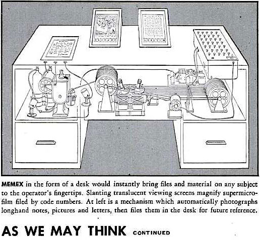
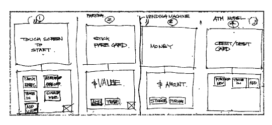
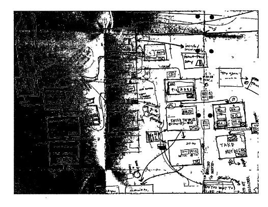
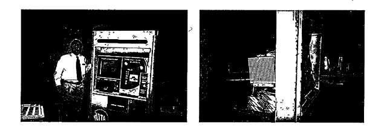

Week 3 - Building interfaces with HTML and CSS
Date: 2025-02-05
Overview
- Interfaces - theory
- Interface design example: Metrocard Machine
- Learnability
- User Interface Wall of Fame/Shame
- HTML and CSS recap
- buttons
Readings
A point where two systems, subjects, organizations, etc., meet and interact. –dictionary definition
Earliest concepts for what a computer (and its interface) may look like
Vannevar Bush’s Memex proposal in 1945 - video
 Vannevar Bush’s As We May Think - Memex
C.J. Licklider’s ‘Man-Computer Symbiosis’
- 1960
Proposed three modes of interfaces with computers:
- desk surfaces - can be drawn on and interpreted by the computer
- networked wall and desk displays - for collaboration and for input to the computer
- speech recognition - to give input to the computer
Psychologist Donald Norman
‘the real problem with the interface is that it is an interface. Interfaces get in the way. I don’t want to focus my energies on an interface. I want to focus on the job. When I use my computer , it is in order to get a job done: I don’t want to think of myself as using a computer, I want to think of myself as doing my job.’
David Reinfurt on designing the MetroCard ticket machine interfaces

Four alternative interface sketches

Planning the flow of windows for the interface

Testig the Metrocard machine interface
MTA ticket machine interface models:
- pre-existing system
- Parking machine model - User places card in then adds money
- Vending Machine model - first you insert money, then you click on what you want
- ATM Model - carefully walks you through every step, lots of intermediate steps and feedback
Which did users prefer in tests?
Learnability
- Human Memory
- interaction styles
- user models vs system models
- learnability principles
This is the install screen for Testfairy, an app for Android that lets developers test out apps before releasing them to a wider public.
This screen is essentially like a full size dialogue. It contains:
- basic info
- a link to install the app
- info on how to use the app
- marketing text
- contact info
- link to read terms
- the ability to report spam
- Unsubscribe
That is a lot of text for an app interface. It contains a link to download the app as well as instructions to use the app, which you’d have to memorize as clicking to install and opening the app would be on a separate screen.
This is not very learnable!
Human short-term memory
One model for understanding human memory is that we have working memory and longterm memory. Working memory is where we do our active thinking. Studies generally indicate we have a limited amount of elements we can actively engage with in our short term memory, generally framed as around 7 items.
We need to limit the user’s options so as not to overload their active working memory.
Three types of interaction styles
- Command language
- Menus / forms
- Direct maniulation
1. Command language
The command line is a command language. These are the earliest type of computer interfaces (see week 1 notes).
As an example, a Google/DuckDuckGo/Bing search bar creates a command language query.
computer science site:purchase.edu
We can consider a Voice User Interface as another manifestation of a command language.
2. Menus / forms
Google form for Processing Community Day NYC
Menus / form interfaces are a more recent interaction model than command language but have been around at least since the 80s. The earliest websites (90s) behave this way.
Dialog boxes are essentially simplified forms.
They can provide a clear if unglamorous interface.

3. Direct manipulation
Direct manipulation is the term we use for a interface where a user interacts with a visual representation of a data object.
- There are physical actions such as dragging on scrollbars or pressing a button
- fast, incremental, reversible
- immediate visual indication of an action taking effect
Compare interaction styles
- learnability - short-term working memory
- consider which requires the user to hold more things in their head at once
- error feedback
- think of errors on the command line vs the error of dragging a scrollbar too far
- efficiency
- which is faster for experts?
- can direct manipulation be efficient?
- user types
- which is better for experts?
- for beginners?
- programming difficulty
- command languages are relatively easy to create
- direct manipulations requires graphics which require both commands as well as creating the visual interface
- accessibility
- command languages and menus and forms are based on text so can be easier for vision-impaired users
Model of a system
The model of a system is the sum of the constituent parts of a system and how they work together. It describes how those parts work and interact to make a system do something.
System model - how the system actually works
Interface model - the model that gets presented to the user through its interface
User model - how the user thinks the system works
The interface model must be
- simple
- match the user’s conception of the needed task
- clear
Interface models should give immediate feedback. Consider what happens when you push a button or drag a scrollbar. Feedback should be visual but can also be audio (clicking sound for example).
Interfaces should be consistent, not surprising. For best practices, follow what popular programs or platforms do.
Interfaces should use common words, not technical jargon.
User Interface Wall of Fame/Shame
HTML / CSS practice
Starter code on Glitch.com
- HTML
- CSS
- DOM
- Placement via css
- Flexbox
Homework
Read David Reinfurt chapter “Touch Start to Begin” (20 minute read) about his experience as a professional designer that designed the Metrocard machines for the New York City subway.
Response: Write a short response (1/2 a page) to this reading. What did you find surprising or new to you in Reinfurt’s description of the design of the MTA Metrocard screens? In The Interface Experience what concepts from earlier media theorists, technicians and designers stick out to you that can inform our user interface design work?
HTML / CSS practice
Using HTML + CSS, and based off tutorials on HTML, CSS and placement with CSS and flexbox, mock up this Metrocard screen.

This is a test in using CSS for colors, fonts, placement.
Start by adding all of the elements you need to a HTML page.
What things need to be grouped together into a container? Those things should sit in a Div that you specify.
Practice specifying sizes.
Keep in mind there isn’t a single definitive way to do this assignment. There will be multiple ‘correct’ ways to do this.
Struggling and re-trying is an important part of this assignment!
New to CSS?: Assume the dimensions of the screen are 600 pixels high by 800 pixels wide.
Already experienced with HTML + CSS?: Make sure your screen works for various sizes laptops/browsers (but don’t worry about phone/tablet).
Upload your completed page, or post a link to it online (for example: on glitch)
Note: I recommend doing this activity after you’ve finished the David Reinfurt reading as he is writing specifically about the design of these screens
USEFUL Tutorials:
Sources: Learnability Notes and Hall of Fame/Shame concept CC BY-NC-SA 4.0 adapted from MIT OpenCourseWare 6.831